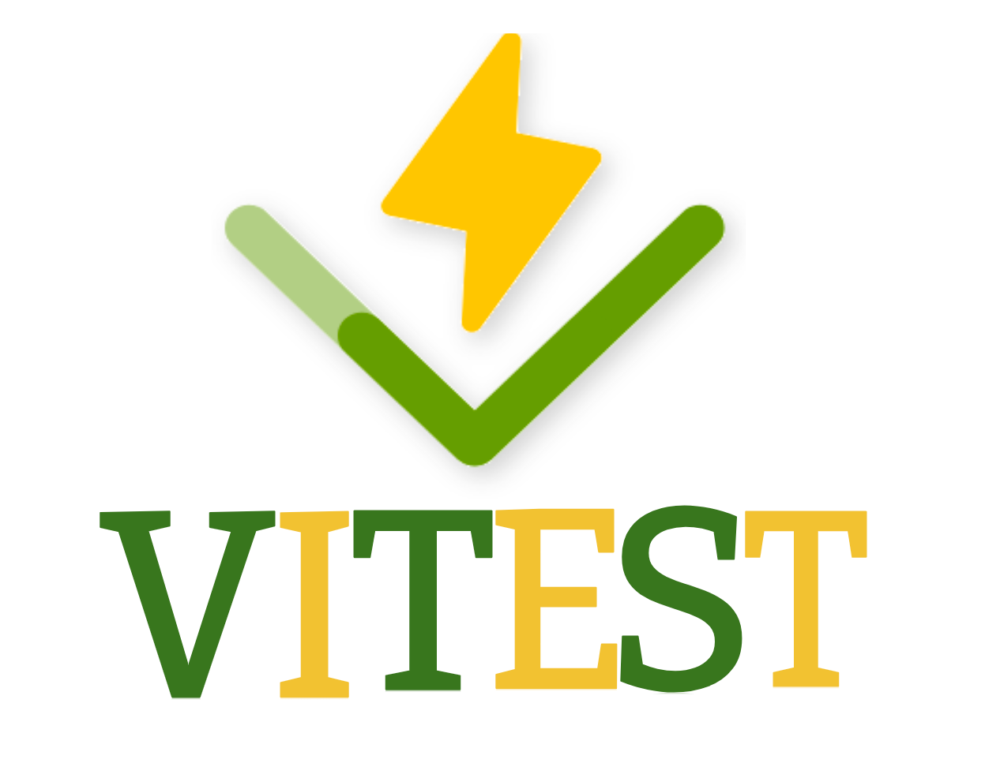
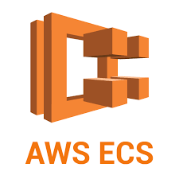

Jordan Fulawka's 4th Work Term Report

Abstract

As the second half of my third placement at Kenna has come to a close,
in this report I will be going in-depth about my experience on the
application development team. I hope to explain not only my
responsibilities during this term, but my growth at Kenna and what has
changed during this term compared to my last. I’d like to give an
overview of my contributions and the impact I had on both my team and
others, and provide examples of the outcomes of my efforts. Additionally
I’d like to illustrate how the skills and knowledge I’ve acquired there
will benefit me in future endeavours, whether in an academic setting or
future employment.
Information about Kenna

Kenna is a dynamic marketing solutions company known for its extensive
collaboration with BASF, a prominent player in the agricultural industry.
However, Kenna's influence extends far beyond this partnership,
encompassing a broad spectrum of services. Some of the things they offer
include insights and analytics, data management, and cultivating a strong
and vibrant brand experience. Their core mission is to craft a unified and
streamlined experience that is tailored specifically for each of their
clientele to meet their exact needs. A major focal point for Kenna lies in
building loyal customer relationships, which is supported by their motto,
"customer first thinking." As such a diverse organization, Kenna thrives
on its ability to cater to a wide range of needs across several
industries.
 Kenna has many teams that all pertain to different parts of computer
science. The team that I am in, which is application development, focuses
on building and maintaining web applications and other tools used by our
clients. Our work involves a mix of frontend and backend development and
touches on everything from UI/UX design to server-side logic. I’ve had the
opportunity to contribute to several projects, gaining hands-on experience
with web technologies and collaborative development workflows. In my
previous term, I also helped out with data-related requests when needed,
which gave me useful exposure to how different systems at Kenna interact
and was knowledge that has been very beneficial to me this term. I’m
excited to continue growing on the application development team during my
next co-op term.
Kenna has many teams that all pertain to different parts of computer
science. The team that I am in, which is application development, focuses
on building and maintaining web applications and other tools used by our
clients. Our work involves a mix of frontend and backend development and
touches on everything from UI/UX design to server-side logic. I’ve had the
opportunity to contribute to several projects, gaining hands-on experience
with web technologies and collaborative development workflows. In my
previous term, I also helped out with data-related requests when needed,
which gave me useful exposure to how different systems at Kenna interact
and was knowledge that has been very beneficial to me this term. I’m
excited to continue growing on the application development team during my
next co-op term.
 Some interesting facts about Kenna is that they have worked with many
brands in many different industries since starting in 1985, when under the
name "AppliCan Marketing". Some of these brands are Mars, Zeneca, Colgate,
Rogers, Coca Cola, Molson, and McCormicks. They initially focused on sales
reporting and store merchandising, before switching to a more digital
approach of marketing just before the year 2000.
Some interesting facts about Kenna is that they have worked with many
brands in many different industries since starting in 1985, when under the
name "AppliCan Marketing". Some of these brands are Mars, Zeneca, Colgate,
Rogers, Coca Cola, Molson, and McCormicks. They initially focused on sales
reporting and store merchandising, before switching to a more digital
approach of marketing just before the year 2000.
Goals
Here are my goals for this term:
- Learn a new skill
- Improve Code Quality through Testing and Best Practices
- Gain exposure to system design and scalability concepts
 One of my goals this term was to learn and apply a new technology that I
hadn’t used before. I was able to achieve this by working with AWS
CloudFormation and Lambda functions in my projects. At the start, I was
very unfamiliar with these tools, and setting up the initial template felt
challenging. To get up to speed, I spent time reading documentation,
watching tutorials, and asking questions to my manager, which helped me
understand how the pieces fit together. Over time, I became comfortable
using CloudFormation to set up infrastructure and gained a solid
understanding of how Lambda functions are used in event-driven workflows.
By the end of the term, I was not only able to contribute to my team by
deploying infrastructure with CloudFormation, but I also felt confident
explaining how these tools worked and how they supported our project
needs. This experience gave me more confidence working with cloud
technologies and showed me the value of picking up new tools to directly
support real-world tasks. Looking ahead, I’d like to continue building on
this foundation and explore more advanced use cases in the cloud.
One of my goals this term was to learn and apply a new technology that I
hadn’t used before. I was able to achieve this by working with AWS
CloudFormation and Lambda functions in my projects. At the start, I was
very unfamiliar with these tools, and setting up the initial template felt
challenging. To get up to speed, I spent time reading documentation,
watching tutorials, and asking questions to my manager, which helped me
understand how the pieces fit together. Over time, I became comfortable
using CloudFormation to set up infrastructure and gained a solid
understanding of how Lambda functions are used in event-driven workflows.
By the end of the term, I was not only able to contribute to my team by
deploying infrastructure with CloudFormation, but I also felt confident
explaining how these tools worked and how they supported our project
needs. This experience gave me more confidence working with cloud
technologies and showed me the value of picking up new tools to directly
support real-world tasks. Looking ahead, I’d like to continue building on
this foundation and explore more advanced use cases in the cloud.

Another goal I set for myself this term was to improve code quality
through testing and best practices. I worked toward this by learning and
applying the testing frameworks used by the team and writing automated
tests for my own features. This was a natural progression from my focus
last term on building features, as it allowed me to ensure the features I
built were both reliable and maintainable. Writing tests pushed me to
think more critically about edge cases, potential bugs, and the long-term
stability of the code. In addition, participating in code reviews gave me
the chance to learn from teammates and receive valuable feedback on my own
contributions. Over time, I noticed that I was more confident in the
quality of my work and that my pull requests reflected stronger test
coverage and cleaner code. Overall, this goal helped me strengthen my
development workflow and develop habits that will continue to be valuable
in future projects.

My final goal this term was to gain exposure to system design and
scalability concepts. I wanted to move beyond just building features and
start developing a better understanding of how applications are deployed,
scaled, and maintained in production environments. To do this, I observed
how my team approached architectural decisions and studied AWS services
such as Elastic Container Service, which gave me valuable insight into how
containerized workloads are managed at scale. I also learned more about
how infrastructure choices, like load balancing and database optimization,
directly impact performance and reliability. While I wasn’t directly
responsible for making system-level decisions, I was able to contribute to
discussions and better understand how the features I worked on fit into
the larger architecture. This experience gave me a stronger appreciation
of how software development ties into long-term system reliability and
growth, and it has motivated me to continue building my knowledge in
system design going forward.
I feel like I have gotten as close as I can to completing these goals
during my work term. This placement at Kenna has really helped me gain
confidence in my skills and show me I have what it takes to work as a
developer. I look forward to seeing how I can apply what I’ve learnt here
to other endeavours in my life.
My Role at Kenna
 My job title at Kenna for this term was an Application Developer. My
primary responsibility was working on internal and client-facing web
applications using JavaScript and React. These applications provide a wide
range of services to our clients, from data entry and reporting tools, to
interfaces for managing campaigns and contests. I contributed to building
new features from the ground up, improving existing components, and
ensuring that our applications were both functional and user-friendly.
My job title at Kenna for this term was an Application Developer. My
primary responsibility was working on internal and client-facing web
applications using JavaScript and React. These applications provide a wide
range of services to our clients, from data entry and reporting tools, to
interfaces for managing campaigns and contests. I contributed to building
new features from the ground up, improving existing components, and
ensuring that our applications were both functional and user-friendly.
Much of my work also involved interacting with the backend, particularly
when implementing full-stack features. This meant working with Node.js,
writing and updating API routes, and interacting with the database to
retrieve, insert, or manipulate data as needed. I gained experience with
SQL queries and backend logic that ensured the front-end displayed
accurate and up-to-date information.
Another key part of my role was addressing issues that arose during QA
testing. I was responsible for reproducing bugs, finding the root cause,
and implementing fixes in both the front-end and back-end code. This
process helped reinforce my understanding of the entire application stack
and improve my debugging skills significantly.
In addition to project work, I was able to see the workflow of an
application from the early planning stages to the final implementation. I
learnt how to write clean, maintainable code, learn to collaborate with
other developers, and follow Git best practices like proper commit
messages and branch management. Overall this role gave me the opportunity
to contribute to real-world applications used by both clients and internal
users, while deepening my technical skill across both front-end and
back-end development.
Conclusion
I hope this report has shed some light on my experiences with Kenna and
the impact they have had on me both personally and professionally during
my short time here. I'd like to quickly review the most important parts of
this report:
Kenna is a marketing solutions company that works primarily with BASF to
deliver a wide variety of services to help improve both the internal
workings of the company, as well as the external customer experience. I
work on the development team, where I work on the reports we show to
stakeholders and ensure they run correctly and show accurate information.
The goals I set out this term were to learn and apply a new technology,
improve code quality through testing and best practices, and gain exposure
to system design and scalability concepts. I feel that I made strong
progress in each of these areas and was able to build on the foundation
from my previous co-op by taking on more challenging and meaningful work.
This experience has given me greater confidence in my technical abilities
and a deeper understanding of how my contributions fit into the bigger
picture. Overall, I consider this term a great success, and I’m grateful
for the chance to continue growing my skills and learning from my team.
Thanks for reading!
Acknowledgment
I’d like to give acknowledgement to my manager Nicholas. Nicholas has
given me so much freedom in what I want to work on and has given me
countless opportunities to explore things that I am interested in. I’m
very lucky to have him as my manager and is a big reason why this co-op
term has been so enjoyable.